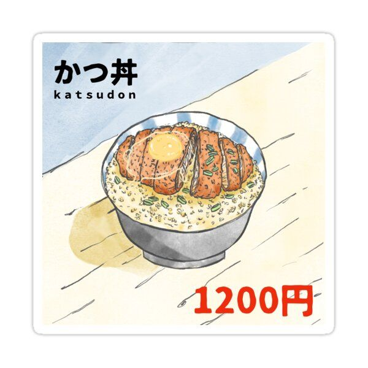

Katsudon
 Katsudon" is a popular Japanese dish consisting of a breaded and deep-fried pork cutlet (tonkatsu)
served over a bowl of rice with a sweet and savory sauce, along with eggs and onions.
There's no direct connection between katsudon and a "foot" concept in traditional Japanese cuisine or culture.
Ingredients
- Cooked rice
- 2 eggs
- 1 pork cutlet
- 35g of flour
- 50g of panko
- 1/4-1/2 onion
- 2 tbsp of soy sauce
- 1 tbsp of mirin
- 1 pinch of sugar
Steps
-
Put 2cm of oil in a pan and heat it until 180°.
-
In the meantime, place the cutlet rinced & dried on a cutting board
and spread it a little by gently beating it with a rolling pit. Cut the side
of the meat every 1.5cm. Seasonthe meat with salt and pepper. -
Put the meat in the beaten eggs and in the panko.
-
Fry the cutlet (max 5min)
-
(Before dressing) Pre cut the tonkatsu so it is easier to eat.
-
In a frying pan, stir fry the onion, then deglace with soy sauce, mirin
and sugar. There should be some “juice” at the bottom on the pan. -
Lower the heat and pour the beaten egg on top of the onions, and briefly cover.
Cook the eggs as you like them. -
In a plate, place the cooked rice,
then the onions and the eggs and on the tonkatsu on top.